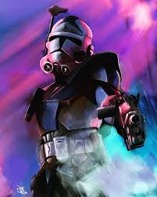

Potential Impact on the Galaxy
Although Fives’ death came in vain, what he almost accomplished could have changed the galaxy’s fate. Had the Jedi discovered the inhibitor chip conspiracy, they could have removed the chips and arrested Palpatine. Anakin Skywalker might never have turned to the dark side, and the Jedi Order could have survived.
While Fives didn’t live to see the results of his actions, his discovery laid the groundwork for future resistance. Without his warning, Rex and Ahsoka may not have survived the Siege of Mandalore. Ahsoka’s survival was crucial to the formation of the Rebellion and the eventual downfall of the Empire.